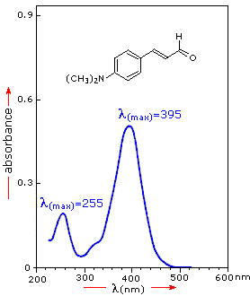

|
If the sample compound does not absorb light of of a given wavelength, I = I0. However, if the sample compound absorbs light then I is less than I0, and this difference may be plotted on a graph versus wavelength, as shown on the right. Absorption may be presented as transmittance (T = I/I0) or absorbance (A= log I0/I). If no absorption has occurred, T = 1.0 and A= 0. Most spectrometers display absorbance on the vertical axis, and the commonly observed range is from 0 (100% transmittance) to 2 (1% transmittance). The wavelength of maximum absorbance is a characteristic value, designated as λmax.
Different compounds may have very different absorption maxima and absorbances. Intensely absorbing compounds must be examined in dilute solution, so that significant light energy is received by the detector, and this requires the use of completely transparent (non-absorbing) solvents. The most commonly used solvents are water, ethanol, hexane and cyclohexane. Solvents having double or triple bonds, or heavy atoms (e.g. S, Br & I) are generally avoided. Because the absorbance of a sample will be proportional to its molar concentration in the sample cuvette, a corrected absorption value known as the molar absorptivity is used when comparing the spectra of different compounds. This is defined as:
Molar Absorptivity,ε = A/ c l | ( where A= absorbance, c = sample concentration in moles/liter
& l = length of light path through the cuvette in cm.) |
|---|
|
|  |